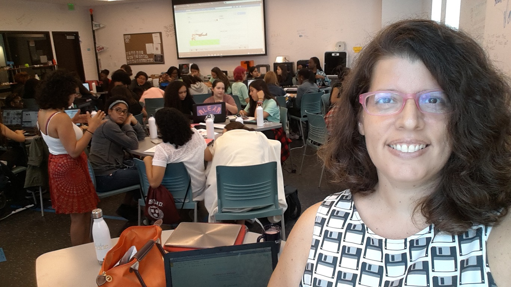
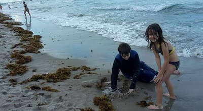
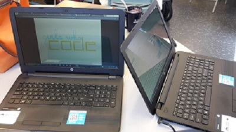
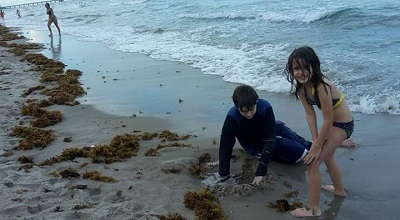
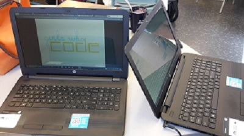

Welcome to Ibis Fonte's website, where we have the most amazing tech adventures. You will find something for everyone here.
Ibis was born and raised in Miami, Florida. From a young age she liked electronics and had a natural curiosity for how things worked, often disassembling her toys, to her Mom's dismay. She graduated in 1990 from Monsignor Edward Pace High School and continued on to study Computer Engineering at Florida International University.
At the age of 19 she started her first business, doing computer programming for local businesses. For the last 25 years, her career has focused on eCommerce and web development and she has worked for many of Miami's most prominent technology companies.
Today, Ibis lives with her partner and children in Coral Springs and they like to spend their time baking, biking and going to the beach. Her goal is to open a tech events company and maker lab within the next year, within the city.

 



I know how to sew and make garments, and love to add LED lights to them and make fashiontech.